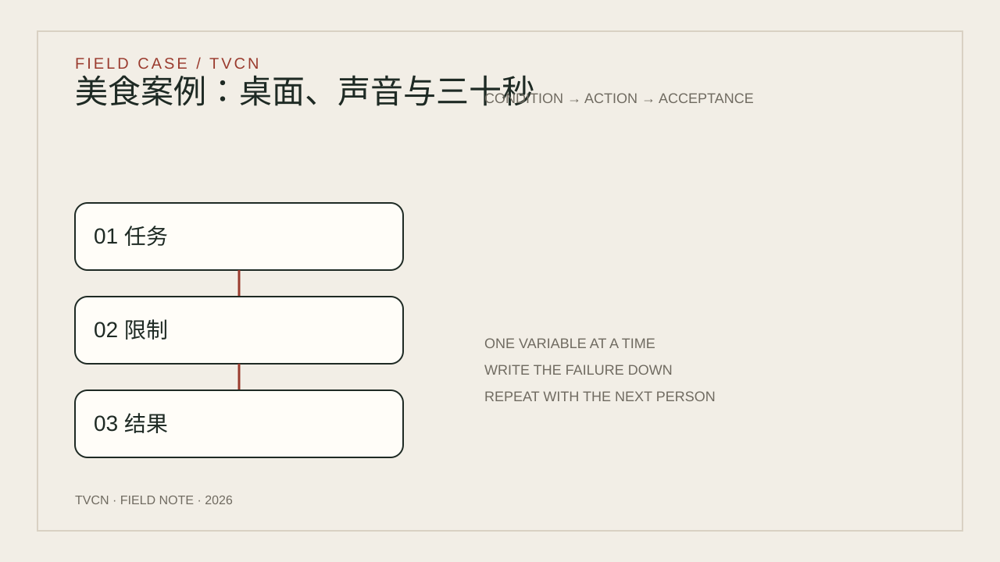

匿名复合复盘：一款手工酱料的 30 秒短片，拍桌面制作过程；场地是真实厨房，只有一扇窗。 这不是某一位客户的真实项目，而是把多次现场里反复出现的约束、决定和翻车压成一个可复用的案例。
案例说明：匿名复合复盘，无现场照片；下方图示为结构示意，不对应单一客户。
| 阶段 | 要回答的问题 | 失败信号 |
|---|---|---|
| 任务 | 一句话卖点能不能被画面证明 | 卖点靠旁白解释 |
| 预演 | 产品动作能不能一次做对 | 演员看提示才敢动 |
| 拍摄 | 六个镜头是否各自回答一个问题 | 镜头重复同一信息 |
| 复盘 | 哪一步最不可逆 | 只在后期补救 |
图解

任务与限制
一个 30 秒美食桌面的复合复盘：一盏窗光、两支麦克风、三个动作，不靠升格堆食欲。
- 厨房不能关窗，窗光会移动。
- 酱料颜色深，容易拍成黑块。
- 没有食品造型师，食材只能准备一次。
排期
09:00 窗光测试，10:00 拍三个动作，11:00 拍成品与包装，11:30 收工；不等正午硬光。
排期不是把工时排满，而是把最不可逆的动作放在体力和光都最可靠的时候；补拍窗口只留给钩子和连续性。
预算
总预算 ¥6,000：食材 1,000、场地 1,000、器材 2,000、后期 2,000。
预算先保三件事：不可重来的现场、声音备份和后期返工；设备升级放在这三件之后。
三个决定
只拍三个动作：倒入、搅拌、装盘；每个动作一个机位，不做无意义环绕。
深色酱料用侧逆光加一块白卡补暗部，不靠提高曝光；背景用浅色木板托住颜色。
声音先录：搅拌的黏稠声、勺子碰碗声、倒酱声；画面后期再对，不靠音乐盖。
三次翻车
第一版用顶光，酱料反光成一片白；改成侧逆光。
搅拌动作重复五次，食材出水；只保留一次完整动作。
现场收音只用了机头麦，搅拌声太远；补了一支贴近的麦克风。
| 翻车现场 | 当时的补救 |
|---|---|
| 第一版用顶光，酱料反光成一片白 | 改成侧逆光。 |
| 搅拌动作重复五次，食材出水 | 只保留一次完整动作。 |
| 现场收音只用了机头麦，搅拌声太远 | 补了一支贴近的麦克风。 |
结果
30 秒成片，三个动作、一条完整声音；酱料颜色和质感都保留。复盘结论：美食片的食欲来自动作和声音，不是升格数量。
可复用清单
- 先测窗光，再准备食材。
- 深色食物用侧逆光，不用顶光。
- 每个动作只拍一次完整的。
- 声音和画面分开录，后期对。
现场拆解
画面：厨房不能关窗，窗光会移动。 这件事决定了第一个机位怎么放，而不是先决定镜头语言。只拍三个动作：倒入、搅拌、装盘；每个动作一个机位，不做无意义环绕。
声音：深色酱料用侧逆光加一块白卡补暗部，不靠提高曝光；背景用浅色木板托住颜色。 现场先录一条干净的声音，再让画面去对；不要等后期用音乐盖住问题。
交付：30 秒成片，三个动作、一条完整声音；酱料颜色和质感都保留。复盘结论：美食片的食欲来自动作和声音，不是升格数量。 交付前把文件命名、时长和平台规格各查一遍，避免内容对了、格式又退回来。
被否决的方案
另一个看似更快的方案，是把 酱料颜色深，容易拍成黑块。 直接交给常规流程，先拍“好看”的画面，再补故事。否决原因很具体：搅拌动作重复五次，食材出水；只保留一次完整动作。 这说明省掉的不是时间，而是可复现的条件。
如果重做
下一次会先处理“先测窗光，再准备食材。”，并把“第一版用顶光，酱料反光成一片白；改成侧逆光。”写进拍摄前检查表；预算不先加设备，而是先加一个能复核的人时。只有把失败条件提前，案例才不是故事，而是方法。
图片说明：本页封面、图解与步骤图是编辑示意或结构图，不是本页实测照片，也不能当作器材测试证据；AI 辅助生成的图会在图注标出。判断器材或画面，以正文的测试条件与现场记录为准。